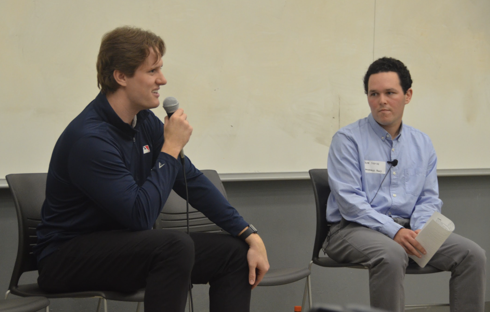
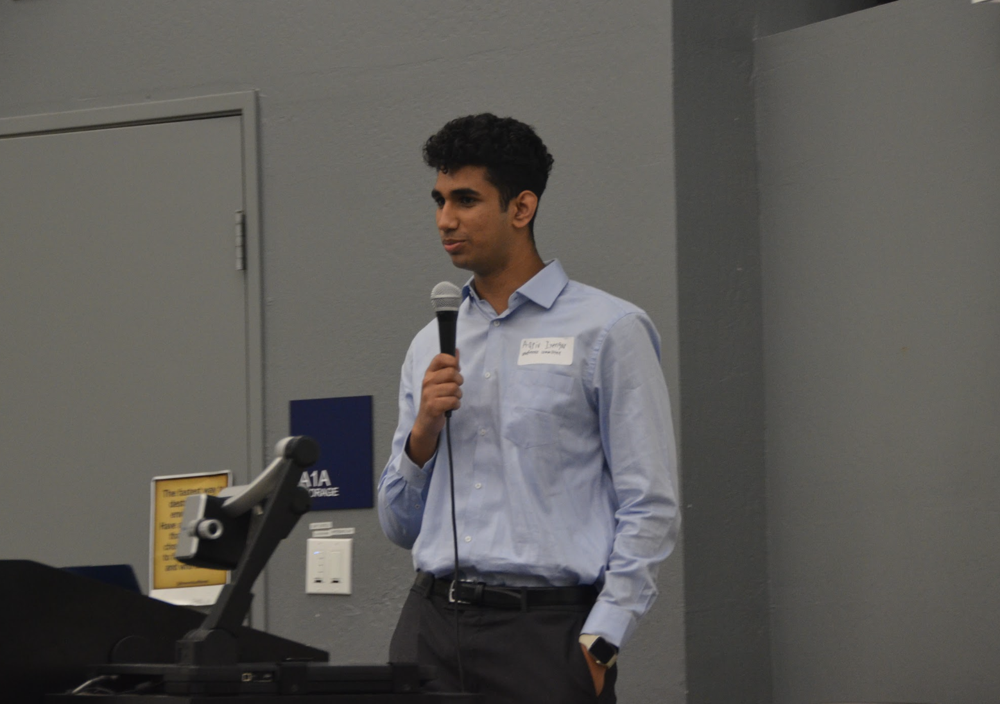

Each year, we at SAGB put together and host the California Sports Analytics Conference, one of the largest sports analytics conferences organized by students in the world. Last year’s conference, the first edition to be in-person, was a rousing success, with almost 200 attendees, including a collaboration with the Aggie Sports Analytics club from UC Davis.
The program included keynote speaker Sam Therrien from the MLB, a panel of professors who have worked on sports analytics and business research, and a wide variety of student research projects. The program can be found here.


Next year, we’re excited to be making the California Sports Analytics Conference bigger than ever. If you or someone you know is interested in attending or speaking, please reach out to one of our conference heads!
Conference Heads
- Aariv Iyengar: aariviyengar@berkeley.edu
- Octavian Yuen: octyuen@berkeley.edu